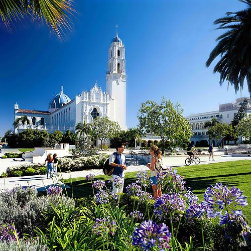
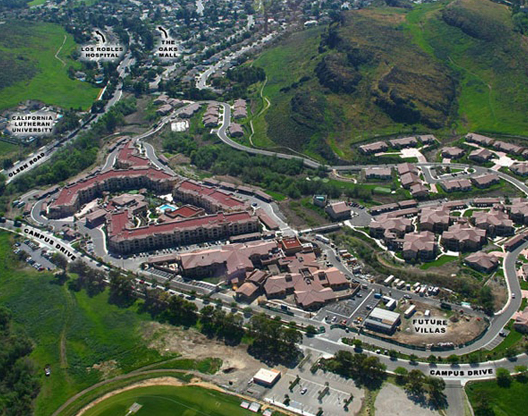
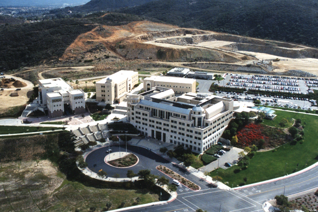

Kenneth Hahn's Hopeful Colleges |
| Colleges |
Picture |
Location |
Description |
Reason |
| University of San Diego |
 |
5998 Alcala Park, San Diego, CA 92110 |
The University of San Diego is a private Roman Catholic university in San Diego, California. The university offers 42 baccalaureate degrees, and several degrees in law, nursing, and other doctorate programs. |
I am interested in business and feel comfortable on campus |
| California Lutheran |
 |
60 W Olsen Rd, Thousand Oaks, CA 91360 |
California Lutheran University is a private, liberal arts university located in Thousand Oaks, California |
I myself am lutheran and it seems like a truly nice, caring place to go |
| University of California San Diego |
 |
9500 Gilman Dr, La Jolla, CA 92093 |
The University of California, San Diego is a public research university |
Both my parents are alumni and I feel comfortable there |
| Calstate San Marcos |
 |
333 S. Twin Oaks Valley Rd, San Marcos, CA 92096 |
California State University San Marcos is a public comprehensive university in San Marcos, California, United States, and one of the 23 campuses of the California State University system. |
It is a comfortable, adaptable school that is nearby |